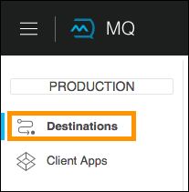
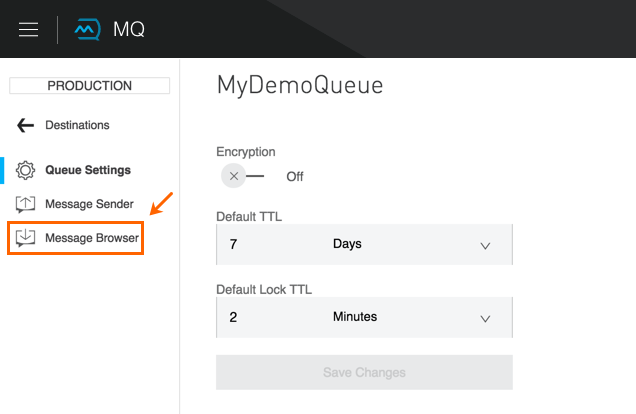

To Configure Queues
Anypoint MQ is a messaging broker that lets applications communicate by publishing a Mule Message to a queue so that another application can consume the message.
This guide describes how to create a queue using Anypoint Platform.
Notes:
-
Queue names can contain alphanumeric characters (a-z, A-Z, 0-9), dots (.), and dashes (-). All other characters are not allowed.
-
Queue names are limited to 127 characters in length.
-
The maximum size of a message is 10 MB.
-
The maximum time to live (TTL) for a message is 2 weeks. The maximum lock TTL is 12 hours.
-
Anypoint MQ supports up to 120,000 in flight messages per non-FIFO queue. FIFO queues are limited to 20,000 in flight messages per queue.
Organization administrators or owners can view the current and past months usage - the total number of messages and API requests. This information is accessed from the Access Management page. For more information, see Anypoint MQ Usage Information.
If you or another person in your organization has not created an environment, user access, and roles for accessing Anypoint MQ, see Anypoint MQ Access Management before starting this guide.
About FIFO Queues
For applications where the order of messages needs to be strictly preserved and enforced, Anypoint MQ provides first in, first out (FIFO) processing to enable ordering of messages. With FIFO, Anypoint MQ ensures that the order in which messages are placed in a queue is the same order in which messages can be retrieved.
Topics:
FIFO Notes
-
A FIFO queue cannot be bound to a message exchange.
-
Encrypting a FIFO queue does not affect the order or the contents of messages consumed.
-
FIFO queues support up to 300 transactions per second. In addition, FIFO permits up to 20,000 inflight messages per queue.
-
FIFO queues are only supported in the US West region (Oregon).
-
Only a FIFO dead letter queue can be used as a DLQ for a FIFO queue.

FIFO-Related Documentation
Other FIFO-related information in the Anypoint MQ documentation set:
-
To Create a Queue - How to create a FIFO queue.
-
FIFO Notes - Determine if a queue is FIFO or non-FIFO.
-
Configuring Anypoint Studio > Studio Visual Editor tab > Advanced Global Element Properties > Message ID (and XML Editor or Standalone tab > All XML Fields With Examples > messageId) field description - When publishing to FIFO queues, if you specify a custom Message ID and the Message ID is the same on multiple messages, the messages with the same Message ID are not redelivered.
-
Create a FIFO Queue From the Administration Portal - How to create a FIFO queue using the Anypoint MQ REST API.
-
Release Notes reference.
To Create a Queue
A queue is a temporary storage area for a message. You can use the MQ feature in Anypoint Platform to create a queue, and send and receive messages to a queue. You can also send and receive messages to a queue using Anypoint Studio.
When you create a queue, you can optionally choose to encrypt all messages in the queue. If enabled, Anypoint MQ encrypts messages using PBE with MD5 and Triple DES, and with a 168-bit key.
Anypoint MQ lets you create either a first-in first-out (FIFO) queue that ensures your messages arrive in order, or you can create a standard queue where message ordering is not guaranteed. FIFO queues are a best fit for applications requiring strict message ordering and exactly once delivery, but where message delivery speed is of less importance. Standard queues are a best fit for applications where messages need to be delivered quickly.
See also About FIFO Queues.
To create a queue or FIFO queue:
-
Log into Anypoint Platform.
-
Click MQ from the left navigation bar or click MQ from the main Anypoint Platform screen:
-
Click Destinations:
 -
Click the blue plus circle.
-
Click Queue or FIFO Queue.
In the Create Queue or Create FiFO Queue screen:

-
ID - Specify a queue name, which can contain these characters: a-z, A-Z, 0-9, period (.), and hyphen (-). Queue names cannot contain spaces or other characters, and can be up to 127 characters in length. The maximum size of a message is 10 MB.
-
Default TTL - How long unprocessed messages persist before being deleted. The maximum TTL is 2 weeks.
-
Default Lock TTL - If there is a server failure and a message is not acknowledged, specifies the duration that a message would wait before being put back into the queue. A locked message does not block other messages to be read. The lock makes a message unavailable to other applications while locked. The maximum Lock TTL is 12 hours.
-
Encryption (Optional) - Set the queue to encrypted. Anypoint MQ uses PBE with MD5 and triple DES to encrypt messages.
-
Assign a Dead Letter Queue*(Optional) - Set the dead letter queue (DLQ) name. The DLQ is a previously created queue where undeliverable messages are sent to. For more information, see About Dead Letter Queues.
Note: If you are creating your first queue in a new MQ account, MQ does not support assigning the dead letter queue to the sole queue in the system - you need at least 2 queues to assign one queue to be a dead letter queue.
-
Click Save Changes.
-
-
In the Destinations screen, click the queue name to list its details:
If you designate a dead letter queue, the details screen appears as:
The details for the dead letter queue itself are:
After you expand the detail for a dead letter queue and if a queue is associated with the DLQ, the detail message indicates whether the DLQ is for FIFO or not:
See To Send a Message to a Queue for how Anypoint Platform lets you send messages to a queue and view, return the messages to the queue, or delete the messages. Message content (called a payload) can be text, JSON, or CSV (comma-separated values).
Note: If you need to delete a queue, see How do I delete a queue?
About FIFO Exactly Once Delivery
For applications such as those used in transactional use cases where messages need to be processed exactly once, Anypoint MQ supports exactly once delivery of messages when messages are published to FIFO queues. FIFO queues supports deduplication of messages. For example, if you retry sending a message with the same message ID within the 5-minute deduplication interval to a FIFO queue, Anypoint MQ guarantees the messages with the same message ID are retrieved and processed exactly once by the subscriber. When building applications requiring this feature on Anypoint Studio, you can set the message ID in publisher settings inside Anypoint MQ connector. If a message ID is not explicitly set, MQ auto generates a unique message ID for each message that’s sent to a queue.
About Dead Letter Queues
Anypoint MQ provides dead letter queue (DLQ) support. This ensures that messages that cannot be successfully delivered are sent for backup to a queue known as the dead letter queue. The dead letter queue enables the ability to sideline and isolate the unsuccessfully processed messages. Users can then analyze the messages sent to the DLQ and determine why those messages were not successfully processed. A DLQ is practically the same as any other queue—it’s just a queue that receives undelivered messages. Also a queue can’t be a DLQ of itself - you need at least two queues for one to be a DLQ.
Important Notes on DLQs:
-
A dead letter queue must be either non-FIFO or FIFO. Messages sent to a FIFO dead letter queue must originate from a FIFO queue. Messages sent to a non-FIFO DLQ must originate from a non-FIFO queue. See also About FIFO Queues.
-
The time to live (TTL) value, or whether the queue is encrypted depends on how you created the queue you use as a DLQ.
-
Both a DLQ and the queue writing to it must be in the same geographical region and environment, and owned by the same Anypoint Platform account.
-
Undeliverable messages that re-route to the DLQ use the source queue’s encryption (regardless of the DLQ’s encryption setting), but messages sent directly to the DLQ by a client, use the DLQ’s encryption setting. Organizations need to ensure their operational requirements for encryption are met. If an organization’s policy is that all messages be encrypted, then all queues must be encrypted if their undeliverable messages go to the DLQ.
-
If a queue has a dead letter queue enabled, then viewing the source queue’s messages in the Anypoint MQ Message Browser counts against the number of maximum deliveries. This is because viewing a message and returning it to the queue counts as a nack, and therefore is an unsuccessful delivery attempt. Deleting the message in the browser rather than returning it to the queue prevents the message from being counted against the maximum deliveries, but then of course, the message is gone.
To Assign a DLQ to a Queue
When you create a queue, if you check Assign a Dead Letter Queue, the following additional fields appear:
-
Dead Letter Queue Name - Choose a previously created queue name from the drop-down list.
-
Reroute after 10 attempts (Optional) - Indicates how many attempts Anypoint MQ tries to deliver messages in the queue before rerouting the message to the dead letter queue. If not specified, the default value is 10 tries. This value ranges from 1 to 1000 attempts.
The following flowchart shows the logic for how messages are sent to a DLQ:

To Recover Messages from a DLQ
If you need to recover messages from the DLQ, use the REST API to get the message from the queue, and write the message to a new queue. For more information, see MQ Administration REST API.
To Determine Which Queues are DLQs
You can view details of each queue to see whether it has any dead letter sources (that is, whether any other queues are using this queue as a DLQ).
You can also view this from the REST Administration API from the Get Queue REST endpoint. If DLQ is set, the returned entities contain the deadLetterSources field. For more information, see MQ Administration REST API.
For example:
{
"encrypted": false,
"type": "queue",
"queueId": "my-dlq-1",
"deadLetterSources": [
"my-queue-4",
"my-dls-1"
],
"defaultTtl": 2000000,
"defaultLockTtl": 2000000
}To Send a Message to a Queue
Note: The maximum message size if 10 MB.
To send a message to a queue:
-
Log into Anypoint Platform.
-
In the top task bar, click MQ.
-
Click Destinations.
-
Click the queue entry in Destinations to view details about the queue.
-
Click the queue name in the details to open the Messaging feature:

-
In the settings page, click Message Sender:

-
Type text in the Payload such as
Hello Mules(leave the Type field set to Text):
-
Click Send.
To Verify the Message in a Queue
To verify that the message arrived in the queue, either return to the Destinations screen to observe the number of messages in the queue, or you can assume the message is in the queue, and you can To Get a Message From a Queue.
To return to the Destinations screen to verify that the message is in the queue:
-
Click Destinations:
-
Click the queue to see the queue detail. The detail shows that a message is in the queue:
To Get a Message From a Queue
To get a message from a queue:
-
Follow the directions in To Send a Message to a Queue and advance to Step 6, except click Message Browser:
 -
Click Get Messages.

Note: If you are retrieving messages from a FIFO queue, click the checkbox to acknowledge that if you view messages here through the browser, and if an application is also consuming messages from this same queue programmatically, the order of the messages received from the FIFO queue may be out of order:
-
Click the message ID value to view the message.

-
If you want to return the message to the queue, such as if other applications may also want to read the message, click the Return Messages icon - this is the default condition. If you switch screens back to the Message Sender or to Destinations, messages automatically return to the queue. In Anypoint MQ, returning the messages to the queue is known as
nack- the message is not altered. However, the time to live (TTL) value you set when you created your queue determines how long the message is available before Anypoint MQ deletes it.
Alternatively, you can delete the message by clicking the trash can icon. In Anypoint MQ, deleting a message is called an
ack- For information on how Anypoint MQ processes ack messages for you, see Acknowledgement Mode.
Now you are able to send and receive messages in Anypoint MQ.
Note: In Anypoint MQ, messages are read through long polling where the server holds the request open until new data is available. Anypoint MQ delivers a batch of messages with a single read.
Organization administrators or owners can view the current and past months usage - the total number of messages and API requests. This information is accessed from the Access Management page. For more information, see Anypoint MQ Usage Information.
In the next section, you can try alternate ways of formatting messages.
To Send a CSV or JSON Message
To send a JSON message:
-
Click Message Sender.
-
Set the Type to JSON.
-
Set the Payload to:
{ "animal that walks":"dog", "animal that swims":"fish", "animal that flies":"parrot" } -
Click Message Browser and the message ID to view the message:

To send a CSV message:
-
Click Message Sender.
-
Set the Type to CSV.
-
Set the Payload to:
"dog", "fish", "parrot"
-
Click Message Browser and the message ID to view the message.
To Purge Messages from a Queue
After expanding a queue’s details, you can purge all the messages in the queue by clicking the Purge Messages icon:
An alert message appears. Click the checkbox to verify that you want to purge all messages in the queue: